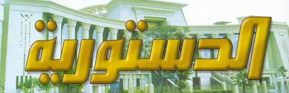

<div id="Magazine_Main">
<table class="Magazine_table" width="90%" border="0" cellspacing="1" cellpadding="1" id="Table1" height="159"
    dir="rtl">
    <tr>
        <td align="center" colspan="2">
         
                 
         
        </td>
    </tr>
    <tr>
        <td align="center" width="62%">
             <p class="Magazine_p" align="right">
            <a class="Magazine_a_header" href="mkal/24/Maher Sami24.htm">
               
                    <b><span style="text-decoration: none"> </span><span lang="ar-eg">دستور جديد ..لماذا؟</span><span
                        style="text-decoration: none"> </span>
            </a>
                 </p>
              <a class="Magazine_a" href="mkal/24/Maher Sami24.htm">
            <span lang="ar-eg"></span>بقلم
                        المستشار/<span lang="ar-eg">ماهر سامي</span></b></a>
          
            <b> 
                <a class="Magazine_a" href="mkal/24/Maher Sami24.htm"><span lang="ar-eg">نائب رئيس المحكمة الدستورية العليا</span></a></b>
        </td>
        <td width="37%" align="right">
            
        </td>
    </tr>
    <tr>
        <td align="center" width="62%">
              <p class="Magazine_p" align="right">

            <a class="Magazine_a_header" href="mkal/24/fakry24.htm"><span style="text-decoration: none"> </span><span
                lang="ar-eg"><b>القاضي الدستوري بين دستور ملغي و اخر معطل و أخيرمرتقب</b></span></a></p>

                    <b><a class="Magazine_a" href="mkal/24/fakry24.htm">بقلم الدكتور / فتحى فكرى<br>
                        أستاذ القانون العام كلية الحقوق - جامعة القاهرة</a></b>
        </td>
        <td width="37%" align="right">
            
    </tr>
    <tr>
        <td align="center" width="62%">
              <p class="Magazine_p" align="right">

            <b><a class="Magazine_a_header" href="mkal/24/Mohamed Assar24.htm"> <span lang="ar-eg">الأسس الفكرية لدستور 2012
                و مقترحات لتعديله</span></a></p>

           <a class="Magazine_a" href="mkal/24/Mohamed Assar24.htm">
                بقلم<span lang="ar-eg"> الدكتور يسري محمد العصار </span>
                <br>
                <span lang="ar-eg">أستاذ القانون العام كلية الحقوق- جامعة القاهرة</span></a>
            
            </b>
        </td>
        <td width="37%" align="right">
            
    </tr>
    
    <tr>
        <td align="center" width="62%">
              <p class="Magazine_p" align="right">
            <b><a class="Magazine_a_header" href="mkal/24/Dr. Abdul Aziz 24.HTM"><span style="text-decoration: none"> </span>
                <span lang="ar-eg">أثر بقاء المادة (219) من الدستور المعطل علي تطبيق الشريعة الإسلامية</span></a></p>
            <a class="Magazine_a" href="mkal/24/Dr. Abdul Aziz 24.HTM">
                <span lang="ar-eg">
                 بقلم المستشار الدكتور/ عبد العزيز محمد سالمان 
                </span><br />
                <span lang="ar-eg">رئيس هيئة المفوضين بالمحكمة الدستورية العليا</span></a>


            
           
        </td>
        <td width="37%" align="right">
            
    </tr>
  
    <tr>
        <td align="center" width="62%">
            <p class="Magazine_p" align="right">

            <b><a class="Magazine_a_header" href="mkal/24/Ali Sawi24.htm"><span style="text-decoration: none"> </span><span
                lang="ar-eg">في القيم الدستورية</span>
             </a></p>

            <a class="Magazine_a" href="mkal/24/Ali Sawi24.htm">
                   بقلم <span lang="ar-eg">الدكتور : علي الصاوي</span><br>
                <span lang="ar-eg">أستاذ العلوم السياسية - جامعة القاهرة</span>


                </a>

            
            </b>
        </td>
        <td width="37%" align="right">
            
    </tr>
   
    <tr>
        <td align="center" width="62%">
              <p class="Magazine_p" align="right">

            <b><a class="Magazine_a_header" href="mkal/24/Mahmoud Fawzi Abdul Bari era24.htm"><span style="text-decoration: none"> </span><span lang="ar-eg">كيف تحمي الديمقراطية نفسها من نفسها؟</span>
              </a></p>
            <a class="Magazine_a" href="mkal/24/Mahmoud Fawzi Abdul Bari era24.htm">

                  بقلم <span lang="ar-eg">المستشار محمود فوزيعبد الباري </span>
                <br>
                <span lang="ar-eg">المستشار بمجلس الدولة</span>

                </a>

            
            </b>
        </td>
        <td width="37%" align="right">
            
    </tr>
  
</table>
       </div>